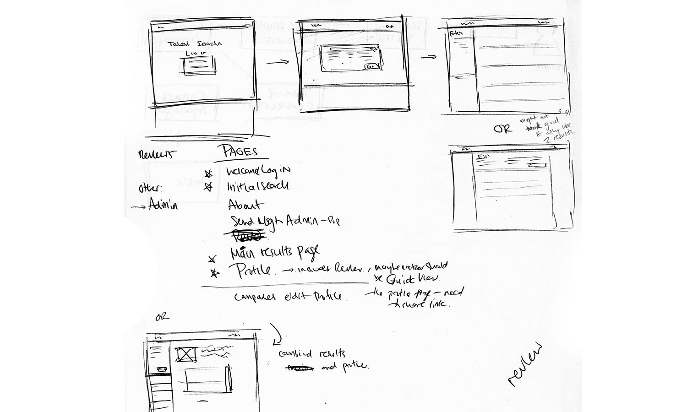
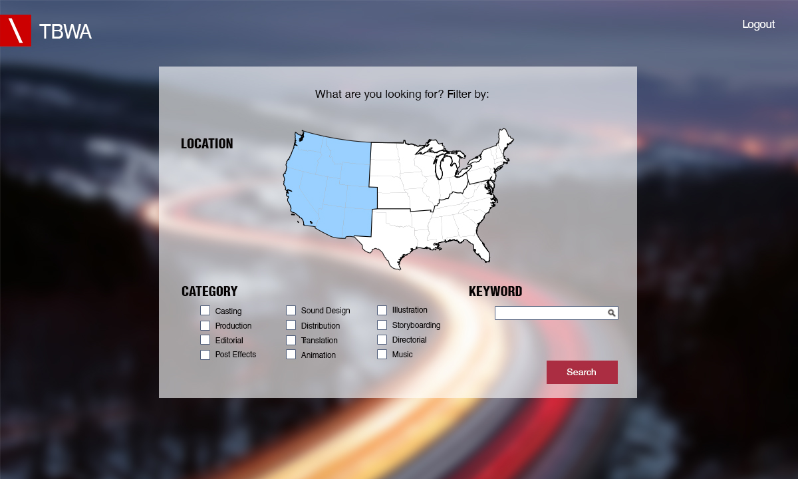
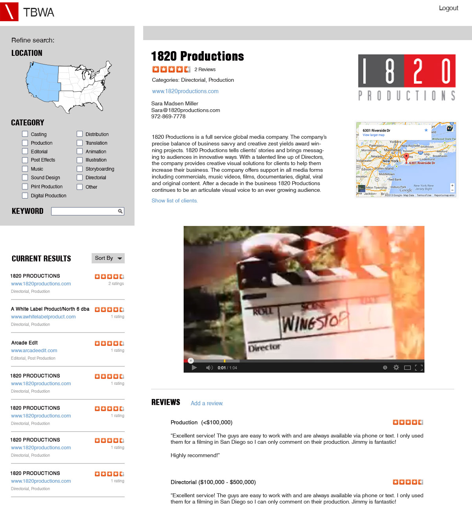
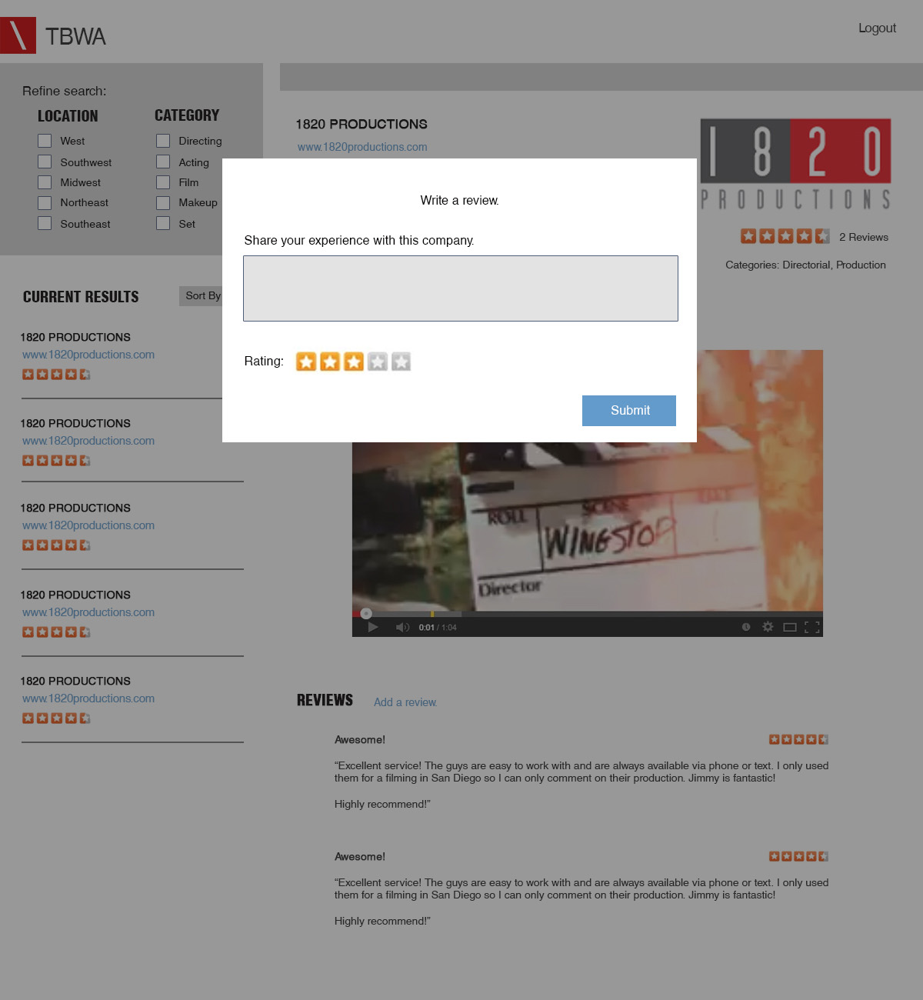

Brief: TBWA is an international advertising agency headquartered in Manhattan. After extensive meetings with the client, our team of four designed and built an internal tool, consisting of a database and search interface, which also included a reviews system for employees to rate and discuss their experiences with certain vendors. This project was part of the Design and Agile Project Management Engineering Lab, a project-based class at Columbia taught and led by Professor Farrokhnia
Execution: Following our first meeting with the client, we narrowed down his requests into main features and began sketching out designs and user flows. Once we decided on a design, I created hi-fidelity mockups and then met the client at the TBWA office in Midtown. While the system was being developed, we went back and forth with the client until we reached a design and feature set that satisfied TBWA's needs.
As some members of the team focused on the backend, my role, beyond design, was focused on the frontend development, for both the client-facing search application as well as an admin panel. The project utilized Angular JS and Bootstrap.
Tools: Balsamiq, Adobe Photoshop, Github, Sublime, RethinkDB
   